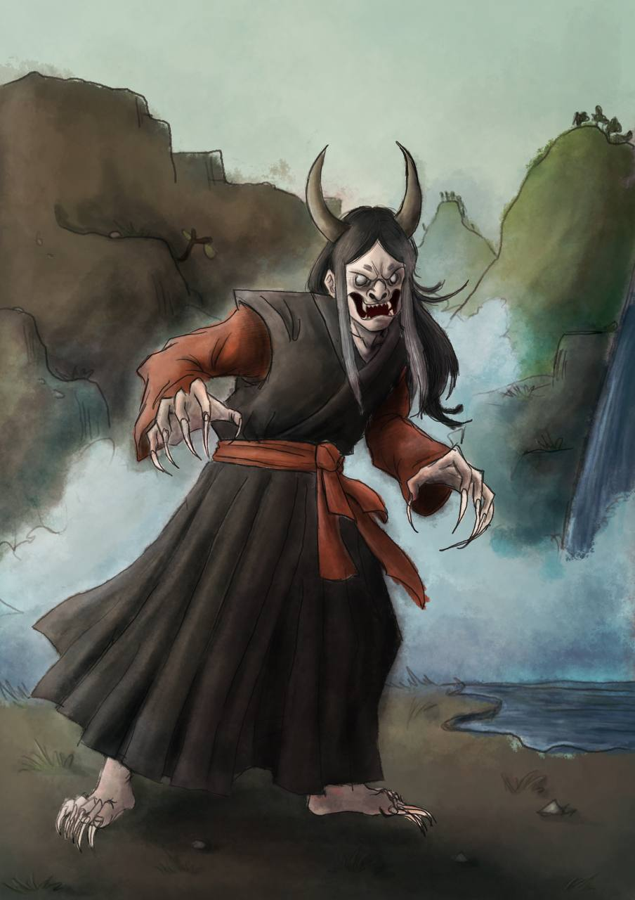

Illustrazione

Kijo
Questa illustrazione, realizzata come progetto finale per il corso di Disegno digitale raffigura una Kijo.
La Kijo è uno yokai, uno spirito della tradizione giapponese, una donna trasformata da esseri umani in un orribile mostro. L'illustrazione è stata realizzata in digitale e i colori mirano a riprodurre quelli dei classici ukiyo-e (le tradizionali stampe giapponesi).